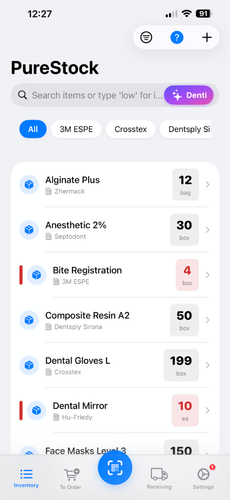
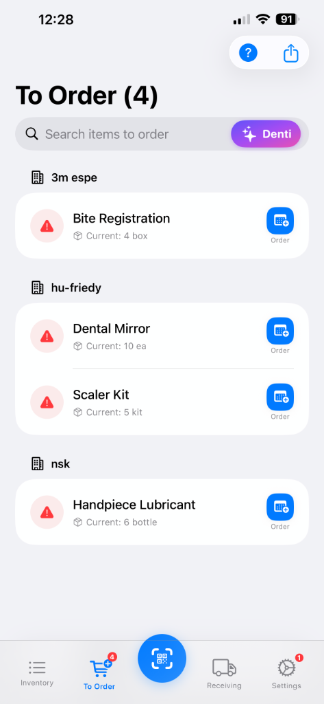
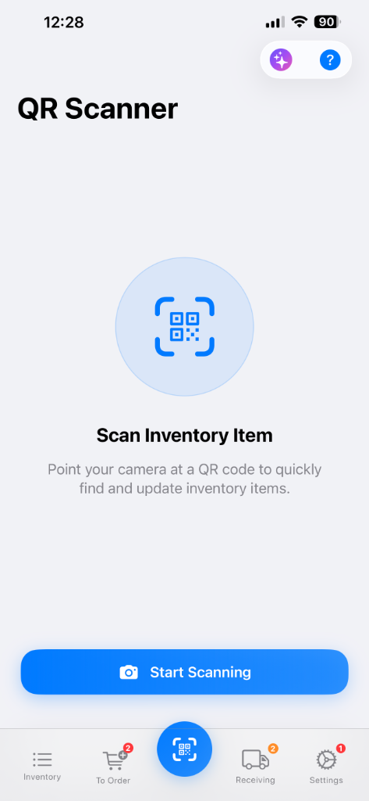
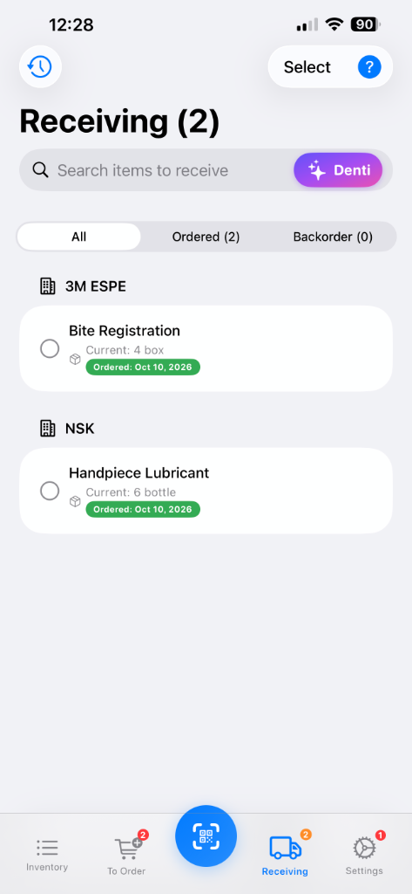
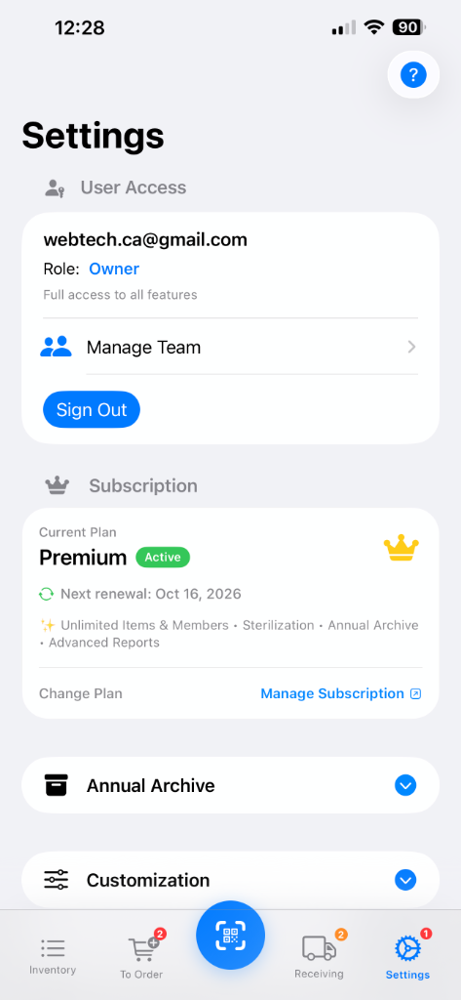

📋 Core Master Catalog
The Master List.
Complete visibility and control across every operatory, drawer, and central storage cabinet.

Item Management & Organization
- Comprehensive Stock Profiles: Track Item Name, SKU, Primary and Secondary Dental Suppliers, On-Hand Quantity, Dispensing Unit (box, bottle, syringe, cassette), Category, and Operatory Location.
- Color-Coded Status Dots: Green for adequate clinic stock, Orange for low-stock threshold alerts, and Red for urgent shortages or near-expiration items.
- Multi-Supplier Catalogs: Group and filter instantly by leading dental brands including 3M ESPE, Hu-Friedy, NSK, Dentsply Sirona, Kerr, and GC America.
Integrated Denti AI Stock Assistant
- Hands-Free In-Operatory Querying: Ask Denti AI naturally while treating patients: “How many boxes of 2% Lidocaine are left in Op 1?” or “We used 2 carpules of Septocaine in Operatory 3.”
- Instant Function Execution & Undo: Denti AI updates inventory numbers in real-time, displaying an
ActionResultCardwith an immediate [↩ Undo Last Action] safeguard if misspoken. - Zero PHI Guarantee: Denti AI interacts solely with material catalog codes and stock counts—never touching patient health records or diagnostic information.
Batch & Lot Expiry Tracking (FIFO)
- Expiration Monitoring: Record manufacturer lot numbers and expiration dates for sensitive resins, adhesives, and hemostatic agents.
- First-In, First-Out (FIFO) Dispensing: Prioritize older inventory batches to eliminate shelf expirations and costly material waste.
- Purchase Pricing & Handover Memos: Maintain contracted unit costs and leave operatory notes between dental assistants.
Audit History & Barcode Label Printing
- Timestamped Transaction Audit: Every stock deduction, addition, or adjustment is permanently logged with the team member’s initials.
- Custom Label Generation: Print durable QR and barcode labels formatted for standard A4 and Avery adhesive sheets (5160, 5163).
🛒 Automated Replenishment
Automated Replenishment.
Proactive shortage detection, hands-free order queuing with Denti AI, and one-tap doctor approvals.

Three-Stage Smart Ordering Pipeline
- Automated Threshold Detection: When stock dips below your customized minimum threshold, items automatically transition to the To Order queue.
- Visual Status Indicators:
- Needs Order (Orange): Materials below par level requiring clinic reorder.
- Ordered (Green): Purchase submitted to supplier with expected delivery tracking.
- Backordered (Red): Supplier delays flagged immediately to plan operatory alternates.
- Duplicate Prevention: Prevents different operatory assistants from double-ordering identical materials during busy clinic hours.
Powered by Denti AI Assistant
- Search Bar ✨ Denti Button: Access clinical AI directly from the order search bar with one tap.
- Conversational Reordering: Speak natural commands: “Denti, add 3 boxes of bite registration and 2 boxes of dental mirrors to the order list.”
- Backorder Audits: Ask “Show all backordered items across our supply vendors” for instant status breakdowns.
Doctor Collaboration & PDF Export
- One-Tap Order Sheet Sharing: Export compiled purchase requisitions grouped by dental supplier (Henry Schein, Patterson, Benco) directly to the doctor via native iOS Share Sheet or Email.
- Role Authorization Safeguard: Assistants can compile and stage reorders; only authenticated Doctor/Admin accounts can finalize and authorize supplier purchases.
📷 Optical Recognition
Rapid Camera Scanner.
High-speed QR & barcode scanning integrated with Denti AI for instantaneous operatory lookups.

Universal Optical Code Recognition
- All Standard Formats: Instantly scans 2D QR codes, GS1 DataMatrix codes on dental packaging, UPC-A, EAN-13, and Code 128 barcodes.
- One-Tap Scanning Initiation: Tap Start Scanning to launch the native camera viewfinder with automatic focus and haptic confirmation.
- Low-Light Operatory Torch: Built-in flashlight toggle ensures reliable barcode detection inside dark supply room cabinets and beneath counters.
Denti AI Scanner Integration
- Quick Denti Action Button: Tap the purple sparkle Denti AI button in the scanner header to run instant voice lookups.
- Voice Assisted Scanning: Speak “Scan and deduct 1 box for Chair 3” to automatically adjust stock counts upon barcode detection without manual typing.
- Accidental Scan Protection: Every scan provides an immediate floating Undo notification to revert accidental double-scans.
Rapid +/- 1 Operatory Mode
- Fast Checkout: Configure scan mode to automatically decrement (-1) when pulling supplies into an operatory, or increment (+1) when unpacking incoming shipments.
- Direct Detail Navigation: Deep-link directly into item specifications, lot expiration dates, and supplier reorder buttons with a single scan.
📦 Inbound Logistics
Receiving & Invoice Archive.
Check in supplier deliveries, reconcile shipments with Denti AI, and file photographic invoices.

Delivery Check-In & Reconciliation
- Supplier Grouped Receiving Queue: Review all pending shipments categorized by supplier (3M ESPE, NSK, Hu-Friedy, etc.) with real-time order date tags.
- All / Ordered / Backorder Filter Tabs: Easily toggle between active incoming items and backordered supplier shortages with a single tap.
- One-Tap Check-In: Tap any item radio circle to confirm receipt, instantly transferring quantities back into active operatory stock.
Denti AI Receiving Assistance
- Search Bar ✨ Denti Button: Speak directly to the receiving assistant when unboxing deliveries with full hands.
- Voice Receiving Dictation: “Denti, received 4 boxes of Bite Registration from 3M and 6 bottles of NSK Handpiece Lubricant.”
- Automated Stock Transfer: Denti AI updates quantities and marks order tickets as fulfilled simultaneously.
Photographic Invoice & Slip Archive
- Snap Paper Invoices: Photograph delivery slips and supplier receipts directly upon unpacking boxes.
- Organized by Supplier & Billing Month: Invoices are automatically organized for bookkeeping and tax preparation.
- Vendor Return Workflow: Swipe left to log supplier returns, record return reasons, and track credit memo balances.
🔬 Clinical Compliance Module
Sterilization & Autoclave Logs.
Real-time compliance dashboard, autoclave cycle logging, and biological indicator spore test tracking.

Visual Compliance Overview Dashboard
- Radial Compliance Gauge: Monitor your clinic’s overall sterilization compliance score (e.g., 66% Compliant) at a single glance.
- Four Key Health Metrics:
- Total Items: Total active instrument sets and surgical kits registered in the clinic.
- Compliant: Instruments within valid retention and sterilization shelf-life windows.
- Overdue: Urgent warning banner flagging instruments requiring immediate re-sterilization (e.g., Scaler Kit overdue).
- Due Soon: Proactive reminders for cassettes approaching sterilization expiration.
Hands-Free Denti AI Cycle Logging
- Sterile Operatory Protocol: While wearing gloves in the sterilization bay, instruct Denti AI hands-free: “Start autoclave cycle: Pouches, 30 min, 121°C, Autoclave 2.”
- Automated Cycle Records: Denti AI records the load number, cycle type, target temperature, pressure psi, cycle duration, and operator initials.
Biological Indicator (BI) & Chemical Monitoring
- Weekly Spore Testing Logs: Log mandatory biological indicator vial incubation start times and document clear Pass/Fail readings.
- Audit-Ready PDF Export: Generate digital sterilization log reports ready to present to dental board inspectors and public health audits.
⚙️ Clinic Security & Admin
Practice Settings & Security Roles.
Role-based user access, team management, subscription controls, and in-app account deletion.

Role-Based Access Control (RBAC)
- Owner / Doctor Account: Full administrative authority, manage team access, approve supply purchase budgets, and control billing.
- Dental Assistant / Staff Permissions: Day-to-day operatory stock deductions, order staging, delivery check-ins, and sterilization cycle logging.
- Manage Team Portal: Easily invite clinical assistants and dental hygienists via secure multi-device pairing.
Denti AI Safety Guardrails
- Permission-Gated AI Functions: When assistants instruct Denti AI, destructive actions (permanent catalog deletions, supplier rate changes) are blocked by security guardrails.
- Doctor Override: Only verified Doctor/Owner accounts can authorize supplier removals or clinic data resets.
Annual Archive & Year-End Reset
- Annual Archive: Encrypt and archive historical audit logs, past memos, and invoices at year-end with one tap.
- Clean Operational Slate: Retain live inventory catalogues while preserving complete historical records for clinic accountants.
In-App Account Deletion (Apple Guideline 5.1.1(v))
- Direct Self-Service Deletion: In full compliance with App Store review guidelines, users can initiate permanent clinic account deletion directly within the app under Settings.
- Complete Data Erasure: Production databases are permanently purged within 30 days, and encrypted backups overwritten within 90 days.